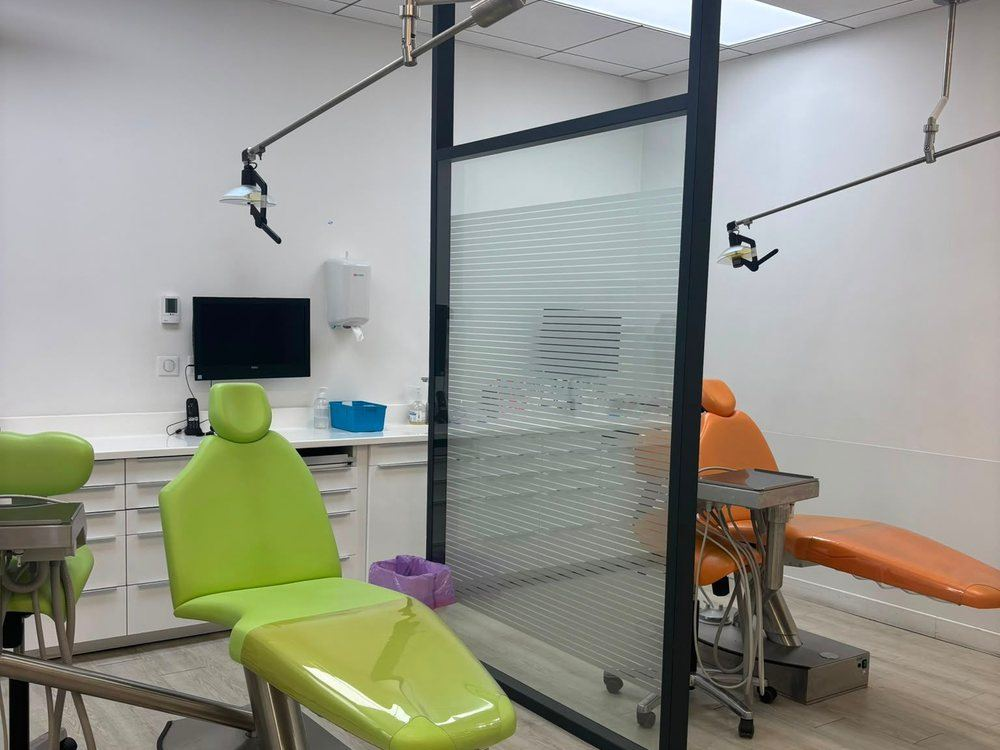

Un sourire aligné sans que personne ne le remarque, grâce à des aligneurs transparents sur-mesure.
Invisalign remplace les bagues traditionnelles par une série de gouttières transparentes, fabriquées sur-mesure à partir d'une empreinte numérique de vos dents. Chaque gouttière déplace progressivement les dents jusqu'à la position souhaitée.
Vous les portez environ 22 heures par jour et les changez toutes les une à deux semaines, selon le plan établi par le Dr Marciano.

Idéal pour les adultes et adolescents qui ne souhaitent pas porter de bagues visibles.
Vous mangez ce que vous voulez : il suffit de retirer les gouttières pendant les repas.
Brossage et fil dentaire comme d'habitude, pour une meilleure santé bucco-dentaire.
Invisalign traite de nombreuses situations, des plus simples aux plus complexes. Un bilan avec le Dr Marciano permet de vérifier si cette solution est adaptée à votre cas.
Le traitement est généralement bien toléré. Une légère pression peut se faire sentir au changement de gouttière, signe que les dents bougent.
Le tarif dépend de la complexité et de la durée. Un devis personnalisé vous est remis lors de la consultation, à transmettre à votre mutuelle.
Prenez rendez-vous pour un bilan personnalisé.
Rendez-vous en ligne 01 43 96 26 00